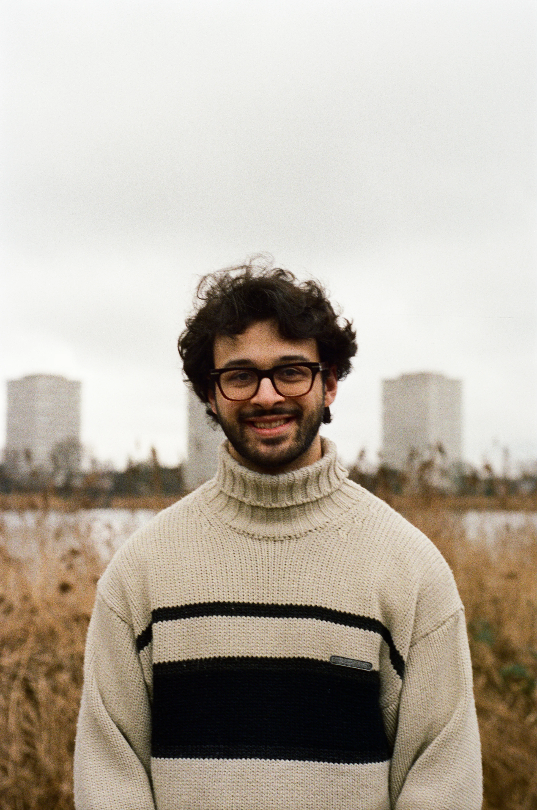
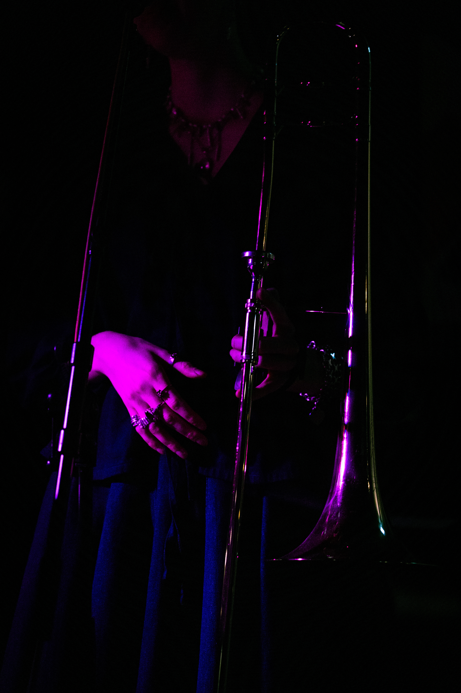
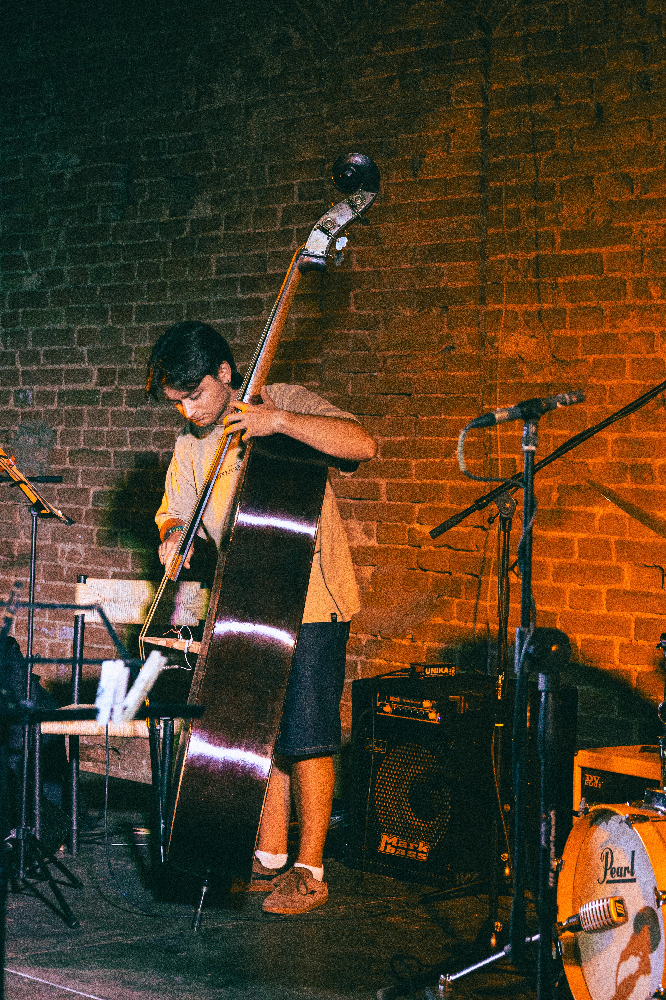
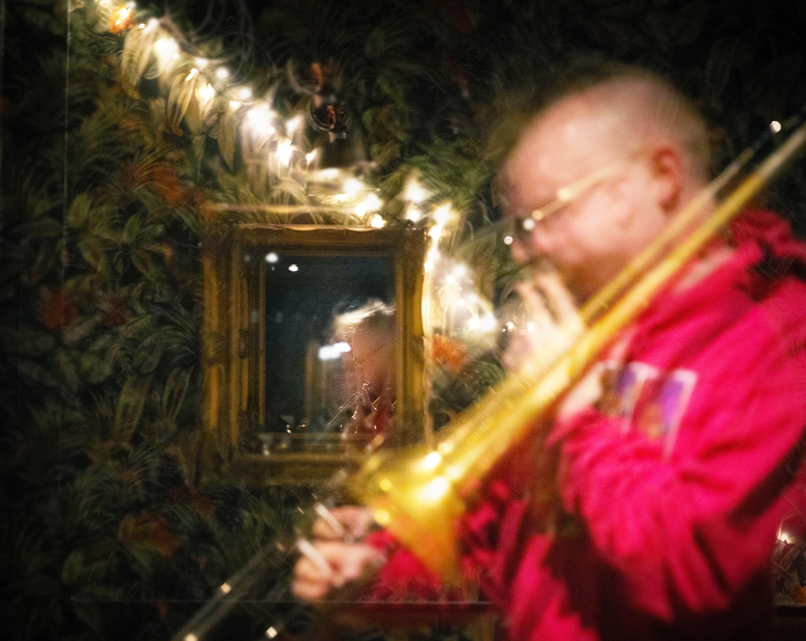

Alex Wardill

Alex Wardill is a London-based woodwind multi-instrumentalist, photographer, and creative collaborator. He performs across jazz, improvised music, pop, musical theatre, and Colombian-inspired rhythms, while also creating portrait and live-event work shaped by the same instinct for atmosphere and character.
London Jazz Orchestra Coltrane At 100 @ Vortex Jazz Club
September 6th
Evelyn Acton @ St Pancras Clock Tower
September 13th
Sara Dhillon @ Vortex Jazz Club
24th September
Mako @ Riverside Studios
26th September
Our Day Will Come: An Afternoon of Jazz, soul and Funk @ Phoenix Arts Club
4th October
Late Late Show Upstairs With Miles Pillinger
20th October
Ruta Di "Onwards & Upwards" Album Launch @ Jazz Cafe Posk
24th October
Mako @ Guildhall Jazz Festival
18th November
The Hornsmen Of The Apocalypse @ Guildhall Jazz Festival
21st November


